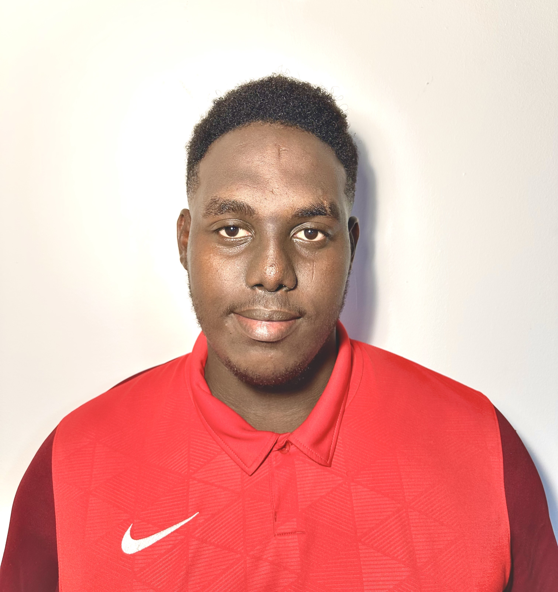

Je suis Abdou Imane, étudiant en deuxiéme année, passionné par l'électrotechnique, les réseaux et les télécommunications. Curieux, motivé et toujours en quête de nouvelles connaissances, je m'intéresse à tout ce qui touche aux technologies modernes et aux innovations dans le domaine de la connectivité. À travers ce site interactif, découvrez mon parcours, mes compétences, mes projets et mes ambitions. N'hésitez pas à explorer et à en apprendre davantage sur ce qui m'anime !